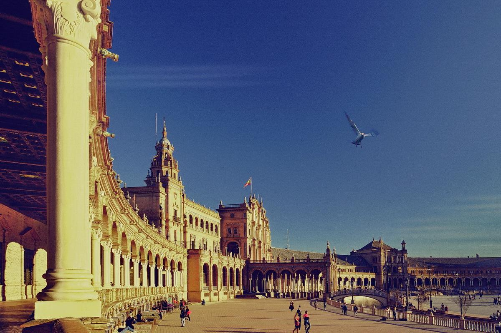

A Map To Spainish History
1492年，意大利热那亚航海家哥伦布在葡、英、法等国拒绝出资资助其进行冒险后，找到了西班牙国王，要求寻找从海上通往印度的通道。伊莎贝尔女王向哥伦布提供了三条船（圣玛丽亚号、平塔号和尼娜号）和百余名水手。1492年哥伦布率船队由加迪斯出发，10月12月发现了美洲新大陆并登上巴哈马的圣萨尔瓦多岛，然后带了几个土著人及一些物品返回西班牙。此后，西班牙殖民者开始了对拉美的征服和占领，将疆土扩展到大西洋的彼岸和菲律宾。西班牙对新大陆的征服是通过对当地土著人的镇压而获得的，许多部落被消灭、印第安人文明被毁灭。同时，西班牙人在新大陆发现了丰富的金矿和银矿，大量的金银经大西洋运回西班牙。<
1588年菲利佩二世对英进行讨伐，但西海军装备落后，加上风暴袭击，西班牙无敌舰队惨败，从而西班牙丧失了海上强国的地位。1648年，西对法作战失利，在陆地上的军事优势也宣告结束。此后，在王位继承战争中，又向英国割让了直布罗陀并陆续丧失了葡萄牙和在意大利和荷兰的领土，西班牙逐渐走向衰落。
西班牙是欧洲第一个具有现代意义的国家，也是世界上第一个殖民帝国。它通过早期的殖民，迅速积累了大量财富，为自己在国际社会上赢得了霸权地位。但仅仅两三个世纪之后，随着欧洲其他民族国家的崛起，它丧失了海上霸权，从此再难恢复当初的荣光。历史长河中，它从辉煌到没落的短短一瞬标记着不同时代的衔接，留给了人们无限思索的空间。
如今的西班牙仅是欧洲一个普通的国家，由于经济发展尽头不足，近年更是获得了“欧猪五国”之一的“美誉”。但由于其早年的殖民扩张，西班牙语、西班牙文化已传播至世界各地，成为了联合国六大官方语言之一。在体育、艺术、娱乐一些领域，西班牙也仍然是高水平、高质量的代表。
